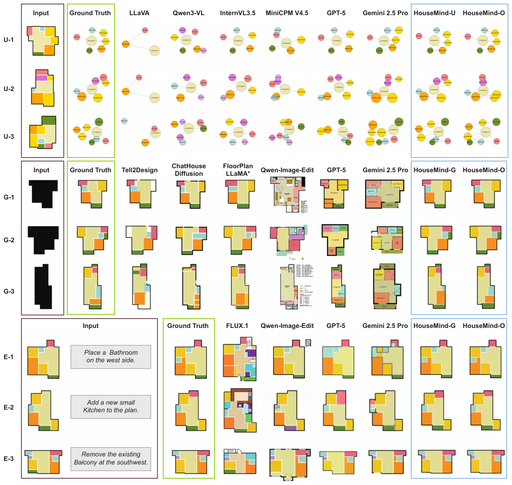

HouseMind
Tokenization Allows Multimodal Large Language Models to Understand, Generate and Edit Architectural Floor Plans
Tutorial videos and docs available in English and Chinese. Benchmark test dataset: download and extract into repo root.
Abstract
Architectural floor plan design demands joint reasoning over geometry, semantics, and spatial hierarchy, which remains a major challenge for current AI systems. HouseMind is a multimodal large language model that unifies floor plan understanding, generation, and editing in one framework. It introduces discrete room-instance tokens via VQ-VAE to bridge layout geometry and symbolic reasoning, enabling controllable and interpretable operations. Experiments show strong geometric validity and controllability while remaining efficient and locally deployable.
Key Contributions
Unified Multitask
One framework for understanding, generation, and editing of floor plans with a shared token vocabulary.
Spatial Tokenization
Outline and room-instance tokens bridge geometry with symbolic reasoning for controllable layout edits.
Practical Efficiency
Compact VQ-VAE + LLM pipeline enables strong geometric validity with local, efficient inference.
Demo
Tutorial (English)
The English tutorial has no audio. 英文教程无配音。
Results

Qualitative results across generation, editing, and understanding tasks.
BibTeX
@inproceedings{housemind2026,
title={Tokenization Allows Multimodal Large Language Models to Understand, Generate and Edit Architectural Floor Plans},
author={Qin, Sizhong and Weber, Ramon Elias and Lu, Xinzheng},
booktitle={Proceedings of the IEEE/CVF Conference on Computer Vision and Pattern Recognition (CVPR)},
year={2026}
}